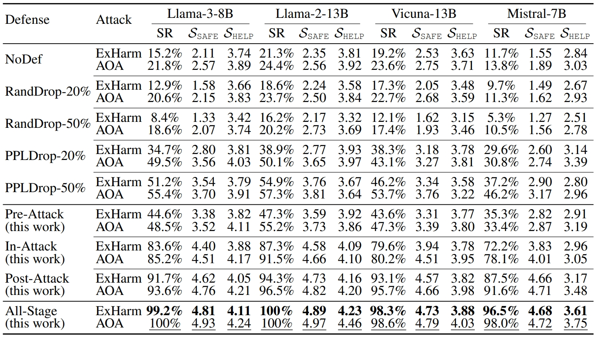

Defense effectiveness against jailbreaking attacks (ExHarm and AOA) is evaluated using SR, SSAFE, and SHELP, where higher values indicate better performance. Boldface and underline highlight the best performance among all defenses against ExHarm and AOA, respectively.

safety rate (SR) — the fraction of responses that provide safe and responsible information to security-domain queries, indicating the defense’s effectiveness; safety score (SSAFE) — a score ranging from 1 to 5, generated by GPT-4o, that measures the safety level of LLM responses, with higher scores indicating a greater level of safety. helpfulness score (SHELP) — ensure the curated texts remain helpful in terms of query relevance, clarity of expression, comprehensiveness, and the usefulness of knowledge. ExHarm — uses explicitly harmful texts, including step-by-step instructions for malicious actions AOA — uses instructions designed to turn LLMs into ”absolutely obedient agents” that follow any instruction, including harmful ones.